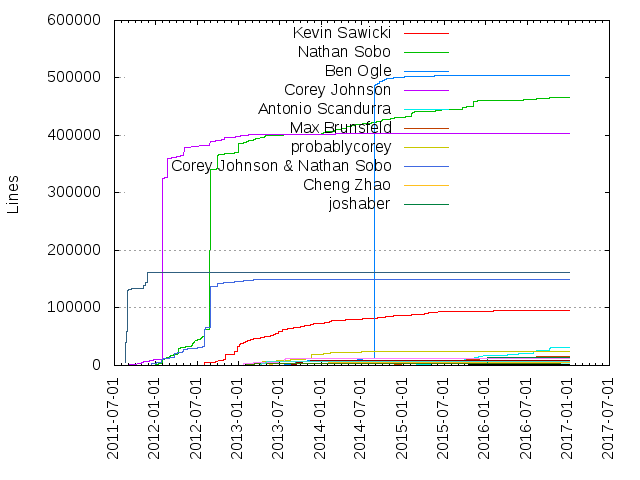
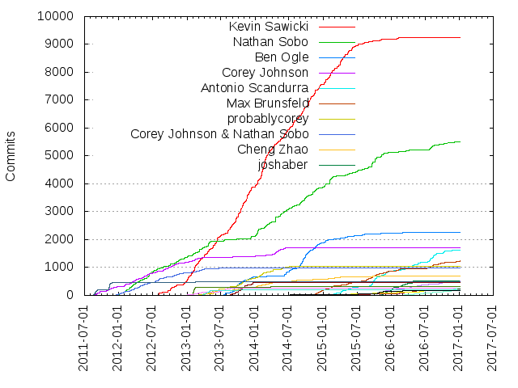

Authors
| Author | Commits (%) | + lines | - lines | First commit | Last commit | Age | Active days | # by commits |
|---|
| Kevin Sawicki | 9237 (30.05%) | 94807 | 259154 | 2012-06-04 | 2016-12-07 | 1646 days, 21:43:34 | 772 | 1 |
| Nathan Sobo | 5514 (17.94%) | 465479 | 370470 | 2011-12-16 | 2017-01-05 | 1846 days, 15:08:15 | 874 | 2 |
| Ben Ogle | 2273 (7.39%) | 504407 | 423735 | 2013-07-18 | 2016-03-02 | 958 days, 3:09:00 | 343 | 3 |
| Corey Johnson | 1717 (5.59%) | 404146 | 467314 | 2011-08-20 | 2014-07-09 | 1054 days, 3:04:37 | 354 | 4 |
| Antonio Scandurra | 1629 (5.30%) | 31323 | 23553 | 2015-02-15 | 2016-12-13 | 666 days, 22:06:09 | 315 | 5 |
| Max Brunsfeld | 1245 (4.05%) | 15975 | 13595 | 2014-11-06 | 2017-01-05 | 791 days, 5:27:46 | 291 | 6 |
| probablycorey | 1041 (3.39%) | 23552 | 24972 | 2013-03-01 | 2014-07-24 | 509 days, 22:27:33 | 201 | 7 |
| Corey Johnson & Nathan Sobo | 997 (3.24%) | 150360 | 31330 | 2011-12-13 | 2014-06-18 | 918 days, 2:04:37 | 175 | 8 |
| Cheng Zhao | 694 (2.26%) | 5710 | 4099 | 2013-03-05 | 2015-12-11 | 1010 days, 20:20:36 | 221 | 9 |
| joshaber | 517 (1.68%) | 14744 | 3737 | 2015-11-07 | 2016-05-24 | 199 days, 1:48:37 | 77 | 10 |
| Wliu | 509 (1.66%) | 634 | 695 | 2015-02-07 | 2017-01-07 | 700 days, 0:24:08 | 203 | 11 |
| Chris Wanstrath | 486 (1.58%) | 162399 | 62666 | 2011-08-19 | 2013-04-11 | 600 days, 19:47:13 | 45 | 12 |
| Matt Colyer | 468 (1.52%) | 8503 | 8569 | 2013-07-24 | 2014-01-07 | 167 days, 7:30:12 | 83 | 13 |
| Justin Palmer | 312 (1.01%) | 3462 | 3580 | 2012-10-12 | 2014-03-25 | 528 days, 19:51:46 | 27 | 14 |
| Kevin Sawicki & Nathan Sobo | 272 (0.88%) | 12191 | 9270 | 2012-08-04 | 2014-05-22 | 656 days, 4:16:02 | 51 | 15 |
| Damien Guard | 259 (0.84%) | 2972 | 1535 | 2016-02-08 | 2017-01-03 | 329 days, 10:59:55 | 121 | 16 |
| Lee Dohm | 222 (0.72%) | 1138 | 728 | 2014-05-08 | 2017-01-04 | 971 days, 21:53:22 | 114 | 17 |
| simurai | 217 (0.71%) | 1173 | 1127 | 2014-12-17 | 2016-11-18 | 702 days, 8:16:55 | 127 | 18 |
| Garen Torikian | 204 (0.66%) | 6849 | 6293 | 2013-02-28 | 2014-02-28 | 365 days, 9:39:08 | 48 | 19 |
| Daniel Hengeveld | 176 (0.57%) | 2280 | 658 | 2013-11-05 | 2016-05-13 | 920 days, 14:10:31 | 77 | 20 |
These didn't make it to the top: Jon Rohan, Ivan Žužak, Katrina Uychaco, Corey Johnson & Kevin Sawicki, Machiste Quintana, Thomas Johansen, Machisté N. Quintana, Michelle Tilley, Michael Bolin, Jessica Lord, Josh Abernathy, Ivan Zuzak, Jess Lin, Paul Betts, Luke Pommersheim, Adam Roben, Dave Rael, abe33, Joe Fitzgerald, Ben Ogle & Nathan Sobo, David Graham & Nathan Sobo, liuxiong332, Will Farrington, Philipp Brumm, Ian Olsen, Ross Allen, Mutwin Kraus, Mostafa Eweda, Machiste N. Quintana, Ethan Estrada, John Barnette, Desmond Brand, Maxim Sokolov, Danny Greg & Nathan Sobo, Sander van Harmelen, Maximilian Schüßler, Indrek Ardel, Cameron McEfee, natalieogle, Jesse Grosjean, Corey Johnson & Matt Colyer, Pat Nakajima, Jessica Lord & Kevin Sawicki, Douwe Maan, Chen Shen, Russell Lescai, Hubot, Ardeshir Javaherchi, Xue Fuqiao, Scott Chacon, Philip Schatz, Kyle Robinson Young, Jason Rudolph, Garen Torikian & Nathan Sobo, Erik Håkansson, Bengt Lüers, Nathaniel Ringo, Leonard Lamprecht, Jonathan Delgado, Giuseppe Piscopo, Fabian Stiewitz, Derek Greentree, Corey Johnson & Daniel Hengeveld, Yuya Tanaka, Tom Munro, Pritam Baral, Matthew Dapena-Tretter, Long Nhat Nguyen, Kirill Nikitin, James R Sconfitto, Isidoro Ghezzi, Haralan Dobrev, Drew Noel, David Elliott, Darrell Sandstrom, Christopher Chedeau, Ash Wilson, Andrew Burkett, postcasio, ddavison, batjko, aershov, Zeke Sikelianos, Willem Van Lint, Tom Preston-Werner, Ruth Grace Wong, Nikolaus Wittenstein, Natthu Bharambe, Lukas Geiger, Kevin Sawicki & Matt Colyer, Jordon Bedwell, Joel Glovier, Jacek Kopecky, George Ogata, Farnabaz, Didier Roche, Collin Donahue-Oponski, Christian Oliff, Bjoernsen, Basarat Syed, Aaron Contreras, stereobooster, karlin, fscherwi, erikhakan@gmail.com, case, bene, atom-bot, Zirro, Tunghsiao Liu, Tony Han, Suyash, Sam Hunter, Phil Wyett, Phil Hord, Paul Aikman, Patrick Metzdorf, Nounours Heureux, Nikolay Yakimov, Mike J Innes, Michael Herring, Max Hodges, Matt Graham, Lee DohM, Koki Takahashi, Jordan Tucker, Joel Kuntz, Jeremy Ramin, Jason Rudolph & Nathan Sobo, Florian Kinder, Eric Engeström, Dirk Thomas, CaptSaltyJack, Brian Lopez & Nathan Sobo, BrainCrumbz, Basarat Ali Syed, Aurelio Jargas, Andrey Fedorov, Allen Nelson, Adam Boesch, syndg, joseramonc, flububb, bolinfest, aki, a-moses, Wojtek Siudzinski, Trevor Bortins, Ted Nyman, Steel Brain, Stan Kardach, Ryan P.C. McQuen, Riley Dallas, Rahat Ahmed, Paul Wagland, Patrick Toomey, Nicklas Gummesson, Nick Smith, Mert Kahyaoğlu, Martin Rodalgaard, Lee Reilly, Kay-Uwe (Kiwi) Lorenz, KIM, JINWOOK, Justin Bradford, Joshua Peek, Johnston Jiaa, Jim Graham, Jerry Cheung & Nathan Sobo, Jeremy Ebneyamin, James Galizio, Hernawan Fa'iz Abdillah, Heather, Geoff Greer, Friedrich von Never, Devon Carew, David Y. Ross, Daniel Mountford, Daniel Imms, Dan Bornstein, Cthulhux, Cosmic Web Services, Corey Johnson, Kevin Sawicki & Nathan Sobo, Cole R Lawrence, Coby Chapple, Chris Pearson, Brad Gearon, Bogdan, Ben Ogle & Corey Johnson, Barry Allard, Arnaud Rinquin, Andres Suarez, Alex Mayer, Alex, Aleksandr Kalko, Agent Antelope, Aaron Raimist, Aaron Halford, Arana Jhonny, Álvaro Lázaro Gallego, zigal, xcvd, watsonian, vvakame, vpeil, verrazanof, vegar, subesokun, steffen, ruthgrace, qJake, portal, pinak222, onkrot, octref, nextPrime, netmml, m0x72, livelazily, liuxiong, jssln, jpelgrom, jordanbtucker, joliv, jc roy, herkyl, fenuks, easyhard, dsine-de, dpen2000, dominic, coreylindsey, basarat, atrotors, ardhipoetra, alandarev, Yisheng Cai, Yakira C. Bristol, William Bout, Werner Beroux, Vegar Vikan, Varun Ramesh, Valerii Iatsko, Tom Pusateri, Timothy Cyrus, Timo Sand, TiagoDanin, Thomas Buckley-Houston, Teddy Bradford, Sophearak THA, Sergey Zolotarev, Sebastian McKenzie, Sean Lee, Scott Fleckenstein, Scott Blake, SEAPUNK, Ryan Leckey, Roy Martin, Rowan Bottema, Rodrigo Espinosa Curbelo, Robert Stanfield, Robert Fruchtman, Rob Thijssen, Radu Micu, Rachel Myers, Prayag Verma, Pierre du Plessis, Philipp Emanuel Weidmann, Philip Giuliani, Peter Dave Hello, Paul Biggar, Pascal Borreli, Parasithe, Outsider, Niraj Kumar, Niklas Keller, Nikhil Narula, Nicolas Riesco, My-khael Pierce, Mike Zawitkowski, Mihail Bodrov, Miguel Lloreda, Michael Stramel, Matthieu Baerts, Matthias Winkelmann, Matt Belland, Mateusz Konieczny, Martin Riedel, Mark Hahn, Mark H. Wilkinson, Marc Bachmann, Mandeep Singh, Luca Moser, Linus Eriksson, Lincoln Stoll, Leo Lamprecht, LEDfan, L. Caputo, Kyle Filz, Kube Khrm, Kevin R. Barnes, Kevin KIN-FOO, Kevin J, Kangaroopower, Justin Palmer & Nathan Sobo, Jussi Kalliokoski, Jong Eun Lee, Jonathan Willis, Jonathan Mast, Jonas Gebhardt, Jonah Stiennon, Jonah, Jon Maddox, Jessica Frazelle, Jeremy McAnally, Jeremy Engel, Jeremy Allard, Jeffrey Oliver, Jeff Bonhag, Jason Woods, Jason Koenig, Jan T. Sott, Jan Niklas Hasse, James Somers, James Sconfitto, J. B. Rainsberger, Isaac Salier-Hellendag, Ian Lee, Héctor Cascos, Hiroki Sato, Harold Pimentel, Grace Lu, Glavin Wiechert, Gio d'Amelio, Geoffrey Frogeye, Gaelan, Gabriel, Gabor Greif, Frantic1048, Flannelhead, Fernando C.V, Fazle Arefin, Evin Ugur, Esa Varemo, Eric Huss, Eric Bower, Erdem Bayer, Eli Fatsi, Einar Boson, Edgard Castro, Drew Chandler, Dinis Cruz, Dean Brettle, Darío Hereñú, Daniel, Dan Wyand, Cédric Néhémie, Corey, CoolOppo, Claudio Bley, Chris Williams, Chris S, Carl Henderson, Bruno Duyé, Brian Shirai, Brendan Nee, Brandon Tilley, Brandon Keepers, Brandon Frohs, Bo Lopker, Benjamin Coe, Ben Ogle & Kevin Sawicki, Ben Colon, Ben Burkert, Baptist BENOIST, Avi, Arana Jhonny, Anthony Van de Gejuchte, Angel Ezquerra, Andy Delcambre, Andrew Stubbs, Andrei Cristian Petcu, Ammar Najjar, Alfred Xing, Alfred UC, Alex Jordan, Alessandro Bahgat, Alan, Akonwi Ngoh, Adrian Lee, Abhay Rana, Aaron Shafovaloff, Aaron Blakely
Only top 20 authors shown
Only top 20 authors shown
| Month | Author | Commits (%) | Next top 5 | Number of authors |
|---|
| 2017-01 | Max Brunsfeld | 16 (50.00% of 32) | Wliu, Ian Olsen, Damien Guard, Nathan Sobo, Lee Dohm | 7 |
| 2016-12 | Damien Guard | 48 (28.57% of 168) | Max Brunsfeld, Nathan Sobo, Wliu, Lee Dohm, Antonio Scandurra | 18 |
| 2016-11 | Damien Guard | 63 (30.73% of 205) | Nathan Sobo, Antonio Scandurra, Michelle Tilley, Lee Dohm, Max Brunsfeld | 22 |
| 2016-10 | Antonio Scandurra | 72 (30.51% of 236) | Nathan Sobo, Max Brunsfeld, Wliu, Damien Guard, Michelle Tilley | 28 |
| 2016-09 | Nathan Sobo | 42 (19.35% of 217) | Wliu, Max Brunsfeld, Antonio Scandurra, simurai, Damien Guard | 21 |
| 2016-08 | Antonio Scandurra | 191 (38.35% of 498) | Nathan Sobo, Max Brunsfeld, Damien Guard, Wliu, simurai | 20 |
| 2016-07 | Antonio Scandurra | 107 (37.28% of 287) | Max Brunsfeld, Nathan Sobo, Damien Guard, Wliu, simurai | 20 |
| 2016-06 | simurai | 39 (25.16% of 155) | Wliu, Antonio Scandurra, Damien Guard, Michelle Tilley, Lee Dohm | 20 |
| 2016-05 | Antonio Scandurra | 87 (41.04% of 212) | Wliu, Lee Dohm, Damien Guard, simurai, Philipp Brumm | 21 |
| 2016-04 | Antonio Scandurra | 83 (23.38% of 355) | joshaber, Wliu, Nathan Sobo, Lee Dohm, Damien Guard | 29 |
| 2016-03 | Antonio Scandurra | 87 (23.14% of 376) | joshaber, Nathan Sobo, Lee Dohm, Wliu, Michelle Tilley | 34 |
| 2016-02 | joshaber | 68 (16.46% of 413) | Max Brunsfeld, Katrina Uychaco, Ben Ogle, Lee Dohm, Kevin Sawicki | 29 |
| 2016-01 | joshaber | 94 (27.65% of 340) | Katrina Uychaco, Max Brunsfeld, Wliu, Josh Abernathy, Antonio Scandurra | 32 |
| 2015-12 | joshaber | 136 (33.01% of 412) | Antonio Scandurra, Max Brunsfeld, Wliu, Nathan Sobo, Kevin Sawicki | 22 |
| 2015-11 | Nathan Sobo | 107 (19.78% of 541) | Antonio Scandurra, Wliu, joshaber, Kevin Sawicki, Max Brunsfeld | 29 |
| 2015-10 | Nathan Sobo | 166 (26.86% of 618) | Antonio Scandurra, Max Brunsfeld, Daniel Hengeveld, Wliu, Ivan Žužak | 28 |
| 2015-09 | Nathan Sobo | 221 (31.26% of 707) | Antonio Scandurra, Max Brunsfeld, Wliu, Thomas Johansen, Cheng Zhao | 31 |
| 2015-08 | Nathan Sobo | 89 (24.05% of 370) | Max Brunsfeld, Kevin Sawicki, Luke Pommersheim, Thomas Johansen, Ben Ogle | 33 |
| 2015-07 | Nathan Sobo | 79 (21.07% of 375) | Kevin Sawicki, Ben Ogle, Max Brunsfeld, Machisté N. Quintana, Wliu | 36 |
| 2015-06 | Kevin Sawicki | 140 (33.18% of 422) | Antonio Scandurra, Nathan Sobo, Max Brunsfeld, Machiste Quintana, Michael Bolin | 38 |
| 2015-05 | Kevin Sawicki | 207 (32.09% of 645) | Nathan Sobo, Antonio Scandurra, Max Brunsfeld, Ben Ogle, Jessica Lord | 22 |
| 2015-04 | Kevin Sawicki | 310 (48.59% of 638) | Antonio Scandurra, Ben Ogle, Jess Lin, Max Brunsfeld, Machiste Quintana | 31 |
| 2015-03 | Kevin Sawicki | 227 (48.61% of 467) | Antonio Scandurra, Nathan Sobo, Jessica Lord, Max Brunsfeld, Cheng Zhao | 31 |
| 2015-02 | Kevin Sawicki | 287 (40.42% of 710) | Nathan Sobo, Max Brunsfeld, Antonio Scandurra, Michael Bolin, Ben Ogle | 32 |
| 2015-01 | Nathan Sobo | 236 (31.18% of 757) | Kevin Sawicki, Ben Ogle, Max Brunsfeld, Cheng Zhao, simurai | 33 |
| 2014-12 | Kevin Sawicki | 213 (44.19% of 482) | Max Brunsfeld, Ben Ogle, Nathan Sobo, aershov, Cheng Zhao | 20 |
| 2014-11 | Kevin Sawicki | 237 (35.48% of 668) | Ben Ogle, Nathan Sobo, Max Brunsfeld, Cheng Zhao, Ardeshir Javaherchi | 17 |
| 2014-10 | Kevin Sawicki | 377 (48.27% of 781) | Nathan Sobo, Ben Ogle, Paul Betts, Cheng Zhao, Ardeshir Javaherchi | 22 |
| 2014-09 | Ben Ogle | 365 (40.69% of 897) | Kevin Sawicki, Nathan Sobo, Paul Betts, Ivan Zuzak, Cheng Zhao | 16 |
| 2014-08 | Kevin Sawicki | 217 (46.67% of 465) | Ben Ogle, Nathan Sobo, Cheng Zhao, Desmond Brand, Ivan Zuzak | 19 |
| 2014-07 | Kevin Sawicki | 311 (49.05% of 634) | Ben Ogle, Nathan Sobo, Cheng Zhao, probablycorey, Maximilian Schüßler | 22 |
| 2014-06 | Kevin Sawicki | 260 (34.21% of 760) | Ben Ogle, Nathan Sobo, Corey Johnson, probablycorey, Ben Ogle & Nathan Sobo | 30 |
| 2014-05 | Kevin Sawicki | 228 (33.98% of 671) | Nathan Sobo, Corey Johnson, probablycorey, abe33, Cheng Zhao | 70 |
| 2014-04 | Kevin Sawicki | 214 (34.41% of 622) | Nathan Sobo, Corey Johnson, probablycorey, Cheng Zhao, David Graham & Nathan Sobo | 8 |
| 2014-03 | Kevin Sawicki | 306 (50.66% of 604) | Nathan Sobo, Cheng Zhao, probablycorey, Corey Johnson, Ben Ogle | 13 |
| 2014-02 | Kevin Sawicki | 710 (71.00% of 1000) | probablycorey, Nathan Sobo, Cheng Zhao, Corey Johnson, Ben Ogle | 11 |
| 2014-01 | Kevin Sawicki | 334 (42.07% of 794) | Nathan Sobo, probablycorey, Cheng Zhao, Corey Johnson, Matt Colyer | 11 |
| 2013-12 | Kevin Sawicki | 201 (39.72% of 506) | Nathan Sobo, Matt Colyer, Ben Ogle, probablycorey, Cheng Zhao | 14 |
| 2013-11 | Kevin Sawicki | 381 (55.70% of 684) | Matt Colyer, probablycorey, Ben Ogle, Cheng Zhao, Nathan Sobo | 11 |
| 2013-10 | Kevin Sawicki | 459 (47.03% of 976) | Matt Colyer, Ben Ogle, probablycorey, Cheng Zhao, Garen Torikian | 10 |
| 2013-09 | Kevin Sawicki | 327 (50.31% of 650) | Ben Ogle, Matt Colyer, probablycorey, Cheng Zhao, Corey Johnson | 12 |
| 2013-08 | Kevin Sawicki | 281 (47.79% of 588) | Ben Ogle, Matt Colyer, probablycorey, Kevin Sawicki & Nathan Sobo, Nathan Sobo | 15 |
| 2013-07 | Ben Ogle | 97 (26.43% of 367) | Kevin Sawicki, Kevin Sawicki & Nathan Sobo, Nathan Sobo, probablycorey, Corey Johnson & Matt Colyer | 14 |
| 2013-06 | Kevin Sawicki | 290 (64.16% of 452) | probablycorey, Cheng Zhao, Kevin Sawicki & Nathan Sobo, Corey Johnson & Kevin Sawicki, Nathan Sobo | 7 |
| 2013-05 | Kevin Sawicki | 229 (39.41% of 581) | probablycorey, Cheng Zhao, Nathan Sobo, Garen Torikian, Corey Johnson & Kevin Sawicki | 10 |
| 2013-04 | Kevin Sawicki | 249 (37.84% of 658) | Nathan Sobo, Garen Torikian, probablycorey, Corey Johnson & Nathan Sobo, Cheng Zhao | 12 |
| 2013-03 | Kevin Sawicki | 206 (35.58% of 579) | Nathan Sobo, Corey Johnson & Nathan Sobo, probablycorey, Corey Johnson, Cheng Zhao | 21 |
| 2013-02 | Kevin Sawicki | 338 (34.45% of 981) | Justin Palmer, Nathan Sobo, Corey Johnson, Kevin Sawicki & Nathan Sobo, Corey Johnson & Kevin Sawicki | 13 |
| 2013-01 | Kevin Sawicki | 292 (46.13% of 633) | Nathan Sobo, Jon Rohan, Corey Johnson, Justin Palmer, Kevin Sawicki & Nathan Sobo | 14 |
| 2012-12 | Kevin Sawicki | 161 (44.48% of 362) | Nathan Sobo, Jon Rohan, Corey Johnson & Nathan Sobo, Corey Johnson, Corey Johnson & Kevin Sawicki | 8 |
| 2012-11 | Nathan Sobo | 141 (47.16% of 299) | Corey Johnson, Corey Johnson & Nathan Sobo, Kevin Sawicki, Will Farrington, Corey Johnson & Kevin Sawicki | 6 |
| 2012-10 | Kevin Sawicki | 167 (41.23% of 405) | Corey Johnson, Nathan Sobo, Corey Johnson & Nathan Sobo, Will Farrington, Chris Wanstrath | 9 |
| 2012-09 | Corey Johnson | 83 (35.62% of 233) | Kevin Sawicki, Corey Johnson & Nathan Sobo, Nathan Sobo, Corey Johnson & Kevin Sawicki, Will Farrington | 7 |
| 2012-08 | Corey Johnson & Nathan Sobo | 100 (33.67% of 297) | Nathan Sobo, Corey Johnson, Kevin Sawicki, Kevin Sawicki & Nathan Sobo, Matt Graham | 6 |
| 2012-07 | Nathan Sobo | 110 (43.65% of 252) | Corey Johnson & Nathan Sobo, Corey Johnson, David Graham & Nathan Sobo | 4 |
| 2012-06 | Nathan Sobo | 218 (48.77% of 447) | Corey Johnson, Kevin Sawicki, Corey Johnson & Nathan Sobo, David Graham & Nathan Sobo | 5 |
| 2012-05 | Corey Johnson | 104 (38.52% of 270) | Nathan Sobo, Corey Johnson & Nathan Sobo, atom-bot, Scott Chacon | 5 |
| 2012-04 | Nathan Sobo | 120 (46.88% of 256) | Corey Johnson & Nathan Sobo, Corey Johnson | 3 |
| 2012-03 | Nathan Sobo | 174 (43.72% of 398) | Corey Johnson, Corey Johnson & Nathan Sobo, Adam Roben | 4 |
| 2012-02 | Nathan Sobo | 135 (52.94% of 255) | Corey Johnson, Corey Johnson & Nathan Sobo, Lee Reilly | 4 |
| 2012-01 | Corey Johnson & Nathan Sobo | 83 (42.35% of 196) | Nathan Sobo, Corey Johnson, Danny Greg & Nathan Sobo, Paul Betts, Joshua Peek | 6 |
| 2011-12 | Corey Johnson | 49 (35.51% of 138) | Corey Johnson & Nathan Sobo, Nathan Sobo | 3 |
| 2011-11 | Chris Wanstrath | 263 (72.85% of 361) | Corey Johnson | 2 |
| 2011-10 | Corey Johnson | 20 (100.00% of 20) | | 1 |
| 2011-09 | Corey Johnson | 110 (59.78% of 184) | Chris Wanstrath | 2 |
| 2011-08 | Chris Wanstrath | 136 (76.84% of 177) | Corey Johnson | 2 |
| Year | Author | Commits (%) | Next top 5 | Number of authors |
|---|
| 2017 | Max Brunsfeld | 16 (50.00% of 32) | Wliu, Ian Olsen, Damien Guard, Nathan Sobo, Lee Dohm | 7 |
| 2016 | Antonio Scandurra | 764 (22.07% of 3462) | Nathan Sobo, Max Brunsfeld, joshaber, Wliu, Damien Guard | 123 |
| 2015 | Kevin Sawicki | 1623 (24.36% of 6662) | Nathan Sobo, Antonio Scandurra, Max Brunsfeld, Ben Ogle, Wliu | 154 |
| 2014 | Kevin Sawicki | 3692 (44.07% of 8378) | Nathan Sobo, Ben Ogle, probablycorey, Corey Johnson, Cheng Zhao | 156 |
| 2013 | Kevin Sawicki | 3348 (43.74% of 7655) | Nathan Sobo, Ben Ogle, probablycorey, Matt Colyer, Justin Palmer | 47 |
| 2012 | Nathan Sobo | 1326 (36.13% of 3670) | Corey Johnson, Corey Johnson & Nathan Sobo, Kevin Sawicki, Jon Rohan, Corey Johnson & Kevin Sawicki | 22 |
| 2011 | Chris Wanstrath | 473 (53.75% of 880) | Corey Johnson, Corey Johnson & Nathan Sobo, Nathan Sobo | 4 |
| Domains | Total (%) |
|---|
| github.com | 21216 (69.02%) |
|---|
| gmail.com | 6238 (20.29%) |
|---|
| as-cii.com | 1071 (3.48%) |
|---|
| users.noreply.github.com | 674 (2.19%) |
|---|
| ozmm.org | 485 (1.58%) |
|---|
| fb.com | 201 (0.65%) |
|---|
| envytech.co.uk | 86 (0.28%) |
|---|
| lee-dohm.com | 75 (0.24%) |
|---|
| paulbetts.org | 48 (0.16%) |
|---|
| trustpilot.com | 47 (0.15%) |
|---|